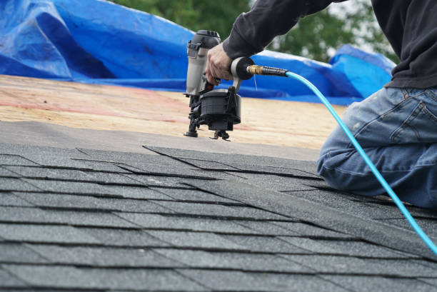
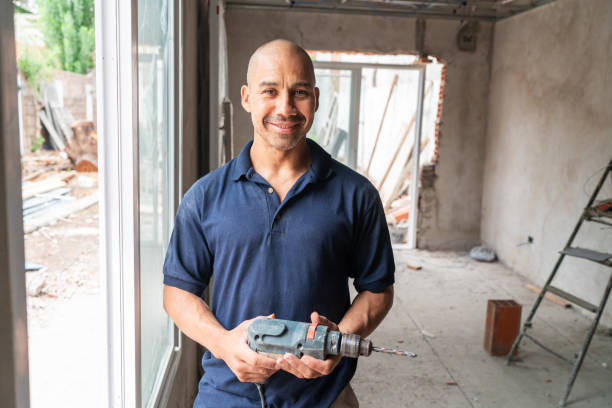
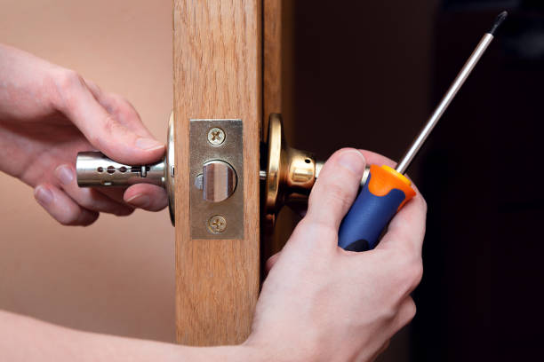
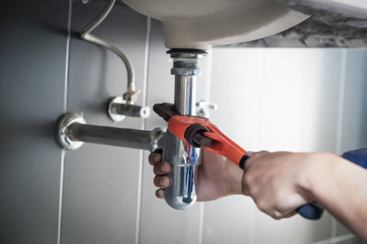

USA - Nationwide
info@Tophandyman.pro
USA - Nationwide
info@Tophandyman.pro

Revitalize your floors with our tile and grout repair services . We restore your surfaces to their original beauty.
Restore the beauty of your tiles with our comprehensive tile and grout repair services. We serve Usa - Nationwide with quality craftsmanship for stunning results. Call us now!
Residential & commercial Handy man
Quality services at affordable prices
Immediate 24/ 7 emergency services


Home repairs and maintenance can often be daunting tasks for homeowners . Whether it’s fixing a leaky faucet, repairing squeaky floors, or addressing general wear and tear, you need a reliable handyman service that you can trust. Our team of experienced professionals is dedicated to providing top-quality home repair services tailored to your unique needs. We use the latest techniques and tools to ensure that every job is done right the first time.
Choosing us means choosing quality, reliability, and efficiency. Our handymen are skilled in a wide range of home repair services, and we understand the specific requirements of maintaining homes in Usa - Nationwide. We pride ourselves on our attention to detail and our commitment to customer satisfaction. No job is too big or too small for us.
When you work with us, you're not just hiring a handyman; you're partnering with a team that values your home as much as you do. Our extensive experience in home repairs ensures that we can quickly diagnose problems and offer effective solutions. We believe that maintaining your home shouldn’t be a hassle, so let us handle your repairs while you sit back and relax.

When you purchase new furniture, the excitement can quickly fade when it comes to assembling it. Our furniture assembly services take the hassle out of putting together your new purchases. We specialize in assembling furniture from all major brands and types, ensuring that your pieces are correctly fitted and ready for use. Our professionals bring not only the tools but also the expertise needed to make your assembly experience smooth and stress-free. With us, you can enjoy your new furniture without the headache of complex instructions and missing pieces.

Drywall is a crucial component of any home, but it can easily suffer from damage due to wear and tear, moisture, or impact. Our drywall repair and installation services will restore the beauty of your walls. Whether you need patching, texture application, or complete drywall installation, our skilled team is equipped to handle it all. We use top-quality materials and techniques to ensure a flawless finish. Trust our experienced handymen to deliver high-quality, seamless repairs that will make your walls look as good as new.

Electrical systems are complex and should be handled by certified professionals. Our electrical repair and installation services in Usa - Nationwide encompass everything from replacing outlets to installing lighting fixtures and more. We prioritize safety and compliance with local codes, ensuring your electrical systems function efficiently and safely. Our skilled electricians are dedicated to providing reliable solutions tailored to your needs. Choose us for peace of mind, knowing that your home or business's electrical needs are in safe hands.

Plumbing issues can disrupt your daily life and lead to significant damage if not addressed promptly. Our plumbing repair and installation services in Usa - Nationwide are designed to tackle everything from leaky faucets and clogged drains to full plumbing installations for kitchens and bathrooms. Our expert plumbers utilize the latest technology to diagnose and fix plumbing problems quickly and effectively. By choosing us, you’ll benefit from our commitment to thorough work, transparent pricing, and customer satisfaction. Don’t let plumbing issues ruin your day—call us for fast, reliable service.

A fresh coat of paint can transform a space, making it feel new and inviting. Our painting and touch-up services are tailored to meet the unique needs of your home or business. Whether you need a full interior or exterior paint job, or simply touch-ups to refresh existing colors, our skilled painters deliver outstanding results. We use high-quality paints and materials to ensure a long-lasting finish. Trust us to bring your vision to life while maintaining a clean and organized workspace.

Doors and windows are the entry points to your home, and damage to them can compromise your security and energy efficiency. At Handy man, we provide expert door and window repair services in Usa - Nationwide, ensuring your home remains safe and stylish.
Our team is skilled in repairing a variety of door and window types, including wooden, fiberglass, and vinyl. Whether you need to fix a broken latch, replace a broken window pane, or enhance your door’s insulation, we are here to assist. We focus on maintaining the functionality and aesthetic appeal of your entrances and exits.
, our reputation is built on reliability, quality workmanship, and exceptional customer service. We take pride in our attention to detail and commitment to your satisfaction. Choose Handy man for all your door and window repair needs, and let us help you enjoy a secure and beautiful home.

Proper caulking and sealing play a key role in energy efficiency and protecting your home from drafts and water damage. Our caulking and sealing services ensure that your home is well-insulated and secure, giving you peace of mind year-round.
Our expert team is skilled at identifying areas that need caulking, such as windows, doors, bathtubs, and exterior trim. We use high-quality caulk that stands up to the elements, preventing air and water leaks. This not only improves your home’s energy efficiency but also enhances its aesthetic appeal.
Choosing our services means working with professionals who prioritize quality and durability. We pay meticulous attention to detail, ensuring that every application is smooth and effective. We’re committed to educating our customers on the importance of ongoing maintenance, helping you protect your investment.
Our caulking and sealing services are efficient, convenient, and designed to fit your schedule. Let us help you keep your home comfortable and energy-efficient all year round.

Sometimes, a small renovation can make a big difference in your home’s function and appearance. Our minor home renovations services include kitchen updates, bathroom remodels, and more. We work closely with you to understand your vision and deliver results that exceed your expectations. With our attention to detail and commitment to quality, we help you create spaces that reflect your style while enhancing your home’s value.

Every home has unique needs that require specialized skills. Our specialized handyman services in Usa - Nationwide are designed to cater to those unique requirements, whether it’s home automation, furniture repair, or unique installations. Our experienced professionals have a wealth of knowledge across various areas and can tackle tasks that standard handymen may overlook. By choosing us, you gain access to a wide range of skills, ensuring every project is completed to the highest standard.

Outdoor spaces enhance the beauty and functionality of your home, and decks are at the forefront of this enhancement. At Handy man, we specialize in deck repair and building services ready to create the perfect outdoor retreat or restore your existing deck.
Whether you're dreaming of a new, custom-built deck or need to repair worn-out boards, our experienced team is here to help. We use top-quality materials and advanced techniques to ensure your deck is safe, durable, and visually appealing.
Choosing Handy man means choosing expertise, reliability, and a commitment to ensuring your outdoor space meets your lifestyle needs. We prioritize excellent customer service and work closely with you throughout the process to ensure your satisfaction. Make your outdoor living dreams a reality with our deck services in Usa - Nationwide.

A strong and attractive fence enhances security while adding charm to your property. Whether you need a new fence installed or an existing one repaired, our fence installation and repair services are ready to meet your needs with quality craftsmanship.
We offer a range of fencing options, from wooden to vinyl and chain-link, ensuring that your preferences and requirements are met. Our team is skilled in all aspects of fence installation and repair, and we use only quality materials to ensure durability and aesthetic appeal.
What makes us the best choice for your fencing needs? We take the time to understand your property, lifestyle, and preferences before starting any project. Our experienced crew ensures that your fence is installed correctly and is built to last. Moreover, we are committed to providing excellent customer service, answering all questions and keeping you informed throughout the process.
With our expertise and dedication, you can enjoy a beautifully installed or repaired fence that enhances the security and beauty of your home .

New flooring can dramatically change the look and feel of your home. Our flooring installation services in Usa - Nationwide cover all types of flooring including laminate, vinyl, hardwood, and tile. Our skilled installers are committed to delivering flawless results, ensuring your floors are installed with precision and care. We guide you through selecting the right materials that fit your style and budget. Choose us for affordable, high-quality flooring solutions and enjoy a beautiful new foundation for your home.

Improving your home’s energy efficiency can lead to significant savings on utility bills while also contributing to a more sustainable environment. Our home energy efficiency upgrades are designed to help you save money and ensure your home is comfortable year-round.
We specialize in a variety of energy-efficient upgrades, including insulation, window sealing, and HVAC improvements. Our team conducts a thorough evaluation of your home to identify areas where improvements can be made. We provide actionable solutions tailored to your needs and budget.
Why choose us for your energy efficiency needs? Our knowledgeable technicians are dedicated to providing high-quality service, ensuring that all upgrades are professionally installed and compliant with local codes. We prioritize communication and education, helping you understand the benefits of each upgrade.
Investing in energy efficiency is a smart decision that can lead to long-term savings and increased comfort in your home. Let us guide you through the process and transform your property into an energy-efficient haven in Usa - Nationwide.

Fixtures in your kitchen and bathroom are not just functional; they also define the space's overall look. Our bathroom and kitchen fixture repair services in Usa - Nationwide specialize in addressing leaks, clogs, and malfunctions. We handle repairs for sinks, faucets, cabinets, and much more, ensuring your fixtures operate smoothly. Our expertise in fixture repairs means you avoid the cost of replacements, and we work efficiently to minimize disruption in your home. Count on us for reliable and quality repairs that rejuvenate your kitchen and bath.

Gutters play a critical role in directing water away from your home. Our gutter cleaning and repair services ensure your gutters are functioning effectively, preventing water damage and maintaining the integrity of your home. We tackle debris buildup, check for leaks, and provide necessary repairs to keep your gutter system in top condition. Trust our services to safeguard your home from potential water-related issues.

Over time, dirt, mold, and grime can accumulate on your property, diminishing its appearance. Our pressure washing services restore the beauty of your exterior surfaces, including driveways, patios, and siding. We use high-powered equipment and eco-friendly cleaning solutions to safely remove stubborn stains and debris. Choose us for a comprehensive cleaning solution that enhances curb appeal and prolongs the lifespan of your surfaces.

Proper weatherproofing and insulation are essential for keeping your home comfortable and energy-efficient. Our weatherproofing and insulation services include assessing your home's current insulation levels and sealing drafts to enhance energy efficiency. We offer solutions that contribute to lower energy bills and improved comfort throughout the seasons. Trust our expert team to optimize your home for the best performance against the elements.

Siding not only enhances your home's appearance but also provides protection from the elements. Our siding repair and installation services in Usa - Nationwide ensure your home remains beautiful and protected. Whether you need to replace damaged panels or install new siding, our team has the expertise to deliver superior results. We work with a variety of materials, allowing you to select an option that complements your home's architectural style. Count on us for quality workmanship that stands the test of time.

Embracing smart home technology can greatly enhance your lifestyle, offering comfort, security, and convenience at your fingertips. Our smart home installation and setup services cater to all your tech needs, from smart lighting and thermostats to security systems and home automation. Our skilled technicians ensure seamless integration of smart devices, creating an interconnected environment that aligns with your lifestyle. Choose us to simplify your life with reliable smart home solutions.

Every season presents unique challenges and opportunities for homeowners. At Handy man, we offer seasonal and outdoor handyman services ensuring your property is well-maintained throughout the year.
From spring yard clean-up to winter preparation services, our versatile team is equipped to handle a variety of tasks that help maintain your home's exterior. We provide services such as power washing, outdoor furniture repair, gutter cleaning, and seasonal landscaping.
Our commitment to quality and customer satisfaction sets us apart . We take pride in our prompt and reliable service, ensuring your outdoor maintenance needs are met efficiently and effectively. Trust Handy man for all your seasonal and outdoor handyman services, making home maintenance a breeze.

Seasonal home maintenance is crucial for keeping your property in top shape year-round. At Handy man, we offer comprehensive spring and fall home maintenance services helping you prepare your home for changing weather conditions.
Our team conducts thorough inspections and performs necessary maintenance tasks, such as checking roofs, cleaning gutters, inspecting HVAC systems, and preparing gardens for seasonal changes. We aim to prevent problems before they arise, extending the life of your essential home systems.
Why choose us for seasonal maintenance? Our commitment to quality and attention to detail ensure that no aspect of your home is overlooked. With Handy man, you can rest easy knowing your home is ready for whatever the season may bring, with reliable service from trusted professionals .

First impressions count, and your yard is the first thing people see when visiting your home. Our yard maintenance and landscaping services in Usa - Nationwide will help you create an inviting outdoor space. Whether you need regular lawn care, garden design, or seasonal clean-ups, our experienced team is here to help. We take pride in delivering professional landscaping solutions that enhance your property’s beauty and value. Trust us to transform your outdoor areas into stunning landscapes you'll love.

The holiday season is a special time, and we help you make it memorable with our holiday light installation services . Our team designs and installs stunning light displays that transform your home into a winter wonderland, all while ensuring safety and compliance. We handle all aspects of installation and removal, letting you enjoy the festivities without the hassle. Choose us for magical holiday light installations that bring joy to your celebrations.

Outdoor furniture adds comfort and style to your exterior spaces, but wear and tear can make it less enjoyable. At Handy man, we provide professional outdoor furniture repair and assembly services in Usa - Nationwide, refreshing your outdoor areas.
Whether you have broken chairs, torn cushions, or need help assembling new patio furniture, our skilled technicians are here to assist. We ensure that your outdoor furniture is not only functional but also well-maintained and inviting.
Choosing Handy man means receiving quality service and craftsmanship dedicated to enhancing your outdoor experience. Trust us to breathe new life into your outdoor furniture so you can enjoy your time outside to the fullest .
Your roof is a critical component of your home’s protection against the elements. Our roof inspection and minor repairs services in Usa - Nationwide will ensure that your roof is in optimal condition and can withstand whatever Mother Nature has in store.
Regular roof inspections are essential for identifying potential issues before they escalate into costly repairs. Our experienced team will assess your roof’s condition, looking for signs of wear, damage, and leaks. We can provide necessary minor repairs to extend the life of your roof and protect your home.
Why trust us for your roofing needs? We are dedicated to delivering quality service tailored to your specific requirements. Our technicians have the training and experience to handle roof inspections and repairs safely and efficiently.
Protect your home with our comprehensive roof inspection and minor repair services in Usa - Nationwide. Keep your property safe and enhance its longevity with our expert solutions.
USA - Nationwide Handy man Pros
(877) 848-1711
info@Tophandyman.pro
09.00 AM - 09.00 PM
09.00 AM - 12.00 PM